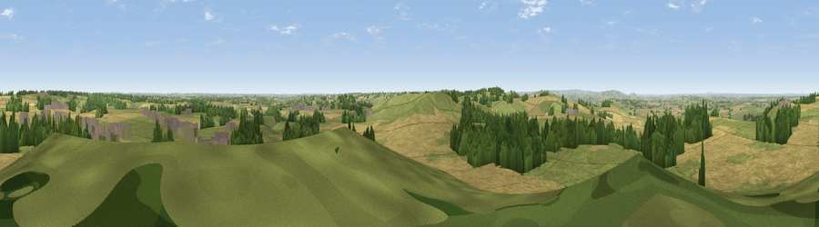

Shenlow Hill
#8277 in England · top 10% of its area beats it · near SheningtonThe view, rendered

A 360° render of this exact spot computed from the terrain model, tree cover and land cover — summer colours, afternoon light, calibrated against photographs of famous viewpoints. Real trees, hedges and buildings will differ in detail.
The panorama
Grey silhouette: terrain skyline in each direction (720 bearings, Earth curvature and refraction included). Dashed green: skyline with trees (+15 m) and buildings (+8 m) as obstacles. Blue strip: how far the ground is visible on each bearing.
Where the view opens
Wedge length = distance to the farthest visible ground on that bearing (vegetation-aware). Rings at 10, 25 and 50 km.
What fills the view
45% grassland · 40% cropland · 12% woodland · 3% built-up
Angular shares of the visible panorama (visual magnitude), not map area. Landscape diversity 0.47 (0–1 Shannon).
Key numbers
More beautiful places nearby
The staircase of upgrades: each row has a higher view potential than everything closer. Driving times are estimates from straight-line distance, calibrated against real road routing — check an actual route before setting out.
| Place | Direction | Drive | Score |
|---|---|---|---|
| Viewpoint near Upper Tysoe | WSW · 2 km | ~5 min | 70.4 |
| Viewpoint near Radway | NNE · 6 km | ~13 min | 71.7 |
| Viewpoint near Ilmington | W · 15 km | ~27 min | 72.6 |
| Viewpoint near Meon Vale | W · 18 km | ~31 min | 77.0 |
| Broadway Hill | WSW · 25 km | ~41 min | 77.7 |
| Viewpoint near Elmley Castle | W · 38 km | ~57 min | 80.5 |
| Bredon Hill | W · 40 km | ~59 min | 83.0 |
| Summer Hill | W · 58 km | ~81 min | 85.4 |
52.08170, -1.48263 · source: osm peak · position refined by local search. Computed location — check access rights before visiting.